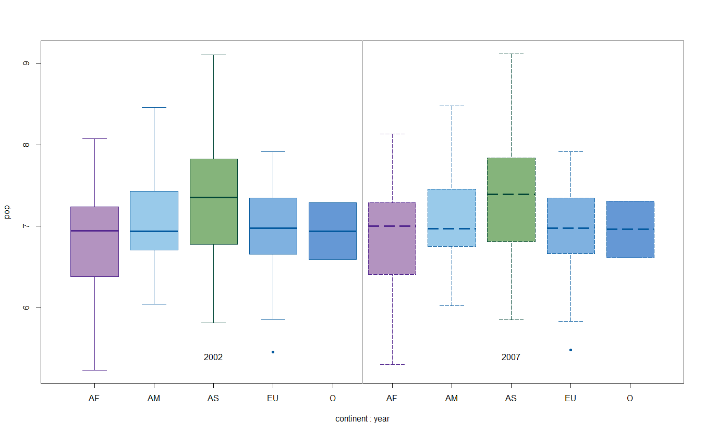

El ANOVA (Análisis de Varianza) es una prueba estadística utilizada para comparar las medias de tres o más grupos independientes. Se utiliza para determinar si hay diferencias significativas entre los grupos con base en las variaciones observadas entre ellos. ANOVA divide la variabilidad total en dos componentes: la variabilidad dentro de los grupos y la variabilidad debida a diferencias entre los grupos.
Al igual que la prueba de t de Student, ANOVA asume que los datos siguen una distribución normal. Sin embargo, esta , la suposición principal es que los residuos (las diferencias entre los valores observados y los valores esperados por el modelo) siguen una distribución normal. Además de que supone igualdad de varianzas.
Por ejemplo, si queremos saber si la población mundial promedio en 2007 es diferente por continente.
# Cagamos los datos
# Cargar el paquete
library("gapminder")
# Cargar los datos de Gapminder
gapm <- gapminder
gapm2007 <- gapm[gapm$year == "2007", ]
#Rampa de colores
library(paletteer)
library(colorBlindness)
pal1 <- paletteer_d("colorBlindness::Blue2Orange10Steps")
### Observamos los datos
namesContinent <- c( "África", "América",
"Asia", "Europa",
"Oceanía")
boxplot(gapm2007$pop ~ gapm2007$continent,
xlab = "Continentes",
ylab = "Esperanza de vida promedio en 2007",
names = namesContinent,
col = pal1, border = "blue4",
outpch = 20
)## Warning in x[floor(d)] + x[ceiling(d)]: NAs produced by integer overflowEn el ANOVA de una vía se tiene un solo factor categórico que divide los datos en grupos.
Para realizar un anova usamos la función aov():
#### Realizamos la prueba
popANOVA <- aov(pop ~ continent,
data = gapm2007
)
summary(popANOVA) ## Df Sum Sq Mean Sq F value Pr(>F)
## continent 4 2.258e+17 5.646e+16 2.717 0.0323 *
## Residuals 137 2.847e+18 2.078e+16
## ---
## Signif. codes: 0 '***' 0.001 '**' 0.01 '*' 0.05 '.' 0.1 ' ' 1Para verificar este supuesto, comprobaremos que los residuos del modelo tengan una \(p>0.05\)
shapiro.test(popANOVA$residuals)##
## Shapiro-Wilk normality test
##
## data: popANOVA$residuals
## W = 0.36038, p-value < 2.2e-16Para verificar este supuesto, comprobaremos que la prueba
bartlett.test() tenga una \(p>0.05\)
# Realizamos la prueba
bartlett.test(gapm2007$pop ~ gapm2007$continent)##
## Bartlett test of homogeneity of variances
##
## data: gapm2007$pop by gapm2007$continent
## Bartlett's K-squared = 255.92, df = 4, p-value < 2.2e-16En este caso, no se cumplen los supuestos. No obstante, podemos aplicar una transformación de los datos para saber si de esta forma se cumplen. Las transformaciones son muy usadas en las pruebas de hipótesis. Dependiendo la naturaleza de nuestros datos, deberemos transformarlos. Las más usadas son logaritmos o raíz cuadrada.
# Transformamos la columna que nos interesa
gapm2007$pop <- log10(gapm2007$pop)
# Realizamos la prueba de Shapiro y Barlett para comprobar ahora
popANOVA <- aov(pop ~ continent,
data = gapm2007
)
shapPop <- shapiro.test(popANOVA$residuals)
barlPop <- bartlett.test(gapm2007$pop ~ gapm2007$continent)
#Definimos un umbral de p
umbral <- 0.05
# Comprobamos si es mayor al umbral
if (shapPop$p.value & barlPop$p.value > umbral) {
"Cumple los supuestos"
}## [1] "Cumple los supuestos"Se cumplen los supuestos. Por lo que podemos seguir siendo felices y hacer una prueba post-hoc
Esta prueba nos permite saber cuál grupo es diferente o igual a otros grupos. En esta prueba nos fijaremos en que las comparaciones tenga un valor de \(p<0.05\)
# Realizamos la prueba
popTukey <- TukeyHSD(popANOVA)
# Extraemos los datos
valorpTukeyOneway <- popTukey[["continent"]]
# Verificamos que p<0.05
ifelse(valorpTukeyOneway[ , "p adj"] < umbral,
"Significativo", "NO")## Americas-Africa Asia-Africa Europe-Africa Oceania-Africa
## "NO" "Significativo" "NO" "NO"
## Asia-Americas Europe-Americas Oceania-Americas Europe-Asia
## "NO" "NO" "NO" "NO"
## Oceania-Asia Oceania-Europe
## "NO" "NO"De esta prueba podemos concluir que la población promedio de África y Asia son diferentes entre sí. Por lo que podemos verlo de forma visual de la siguiente forma:
boxplot(gapm2007$pop ~ gapm2007$continent,
xlab = "Continentes",
ylab = "Población mundial 2007 (log10)",
names = namesContinent,
ylim = c(5, 9.5),
col = c("#B393C0", "#99caea", "#85B47B","#7fb1e0",
"#6598d5" ),
border = c( "#54278F","#045A9f", "#014636",
"#045A9f", "#045A9f"),
lwd = 1,
outpch = 20
)
text(x = c(1:5), y= 9.4,
labels= c("A", "AB", "B",
"AB", "AB"))Otra forma de hacerlo es con la prueba de Kruskal-Wallis, la cual es la prueba NO paramétrica de este ANOVA. Ejemplo:
gapm2007nonParametric <- gapm[gapm$year == "2007", ]
kruskal.test(pop ~ continent,
data = gapm2007nonParametric)##
## Kruskal-Wallis rank sum test
##
## data: pop by continent
## Kruskal-Wallis chi-squared = 9.8004, df = 4, p-value = 0.04393El test nos indica que al menos dos de nuestros grupos difieren entre sí. Para saber entre cuales hay diferencias significativas (análogo a Tukey)
pairwise.wilcox.test(gapm2007nonParametric$pop, gapm2007nonParametric$continent,
p.adjust.method = "holm" )##
## Pairwise comparisons using Wilcoxon rank sum test with continuity correction
##
## data: gapm2007nonParametric$pop and gapm2007nonParametric$continent
##
## Africa Americas Asia Europe
## Americas 1.000 - - -
## Asia 0.019 1.000 - -
## Europe 1.000 1.000 0.265 -
## Oceania 1.000 1.000 1.000 1.000
##
## P value adjustment method: holmAl igula que con los datos transformados, la prueba no paramétrica nos indica que África y Asia tienen poblaciones promedio diferentes entre sí.
En ANOVA de dos vías, hay dos factores categóricos que se consideran
simultáneamente. Permite examinar las interacciones entre los dos
factores, así como los efectos principales de cada uno. El efecto de los
factores puede ser aditivo (+) o multiplicativo (*).
El ANOVA de dos vías permite estudiar cómo influyen por sí solos cada
uno de los factores sobre la variable dependiente (modelo aditivo) así
como la influencia de las combinaciones que se pueden dar entre ellas
(modelo con interacción).
#Seleccionamos nuestros datos
gapm2k2_7 <- gapm[gapm$year == "2002" | gapm$year == "2007", ]
# Transformamos la columna que nos interesa
gapm2k2_7$pop <- log10(gapm2k2_7$pop)
gapm2k2_7$year <- as.factor(gapm2k2_7$year)
# Realizamos la prueba
popANOVAAdd <- aov(pop ~ continent+year,
data = gapm2k2_7
)
summary(popANOVAAdd)## Df Sum Sq Mean Sq F value Pr(>F)
## continent 4 11.82 2.9554 7.322 1.28e-05 ***
## year 1 0.07 0.0728 0.180 0.671
## Residuals 278 112.21 0.4036
## ---
## Signif. codes: 0 '***' 0.001 '**' 0.01 '*' 0.05 '.' 0.1 ' ' 1Visualizamos los datos
# boxplot
boxplot(pop ~ continent * year,
data = gapm2k2_7,
names=rep(namesContinent, 2),
col = c("#B393C0", "#99caea","#85B47B",
"#7fb1e0","#6598d5" ),
border = c( "#54278F","#045A9f", "#014636",
"#045A9f", "#045A9f"),
lwd = 1,
lty = sort(rep(c(1,5),5)),
outpch = 20) +
text(x=c(3,8), y=5.4, label= c("2002", "2007"))+
abline( v = 5.5, col = "gray70")
Para verificar este supuesto, comprobaremos que los residuos del modelo tengan una \(p>0.05\)
shapiro.test(popANOVAAdd$residuals)##
## Shapiro-Wilk normality test
##
## data: popANOVAAdd$residuals
## W = 0.99451, p-value = 0.3997Para verificar este supuesto, comprobaremos que la prueba
bartlett.test() tenga una \(p>0.05\)
# Realizamos la prueba en función del continente
bartlett.test(pop ~ continent, data = gapm2k2_7)##
## Bartlett test of homogeneity of variances
##
## data: pop by continent
## Bartlett's K-squared = 6.3656, df = 4, p-value = 0.1735#Realizamos la prueba en función de los ingresos
bartlett.test(pop ~ year, data = gapm2k2_7)##
## Bartlett test of homogeneity of variances
##
## data: pop by year
## Bartlett's K-squared = 0.00053081, df = 1, p-value = 0.9816Esta prueba nos permite saber cuál grupo es diferente o igual a otros grupos. En esta prueba nos fijaremos en que las comparaciones tenga un valor de \(p<0.05\)
# Realizamos la prueba
popANOVAAddTukey <- TukeyHSD(popANOVAAdd)
# Extraemos los datos
valorpTukeyTwoWay <- popANOVAAddTukey[["continent"]]
# Verificamos que p<0.05
ifelse(valorpTukeyTwoWay[ , "p adj"] < 0.05,
"Significativo", "NO")En este caso la población promedio de Asia durante 2002-2007 fue diferente de África y Europa, sin embargo el factor Año no es significativo para el modelo.
# Realizamos la prueba *
popANOVAMult <- aov(pop ~ continent*year,
data = gapm2k2_7
)
summary(popANOVAMult)## Df Sum Sq Mean Sq F value Pr(>F)
## continent 4 11.82 2.9554 7.218 1.54e-05 ***
## year 1 0.07 0.0728 0.178 0.674
## continent:year 4 0.02 0.0042 0.010 1.000
## Residuals 274 112.20 0.4095
## ---
## Signif. codes: 0 '***' 0.001 '**' 0.01 '*' 0.05 '.' 0.1 ' ' 1Para verificar este supuesto, comprobaremos que los residuos del modelo tengan una \(p>0.05\)
shapiro.test(popANOVAMult$residuals)##
## Shapiro-Wilk normality test
##
## data: popANOVAMult$residuals
## W = 0.99436, p-value = 0.3758Para verificar este supuesto, comprobaremos que la prueba
bartlett.test() tenga una \(p>0.05\)
# Realizamos la prueba en función del continente
bartlett.test(pop ~ continent, data = gapm2k2_7)##
## Bartlett test of homogeneity of variances
##
## data: pop by continent
## Bartlett's K-squared = 6.3656, df = 4, p-value = 0.1735#Realizamos la prueba en función de los ingresos
bartlett.test(pop ~ year, data = gapm2k2_7)##
## Bartlett test of homogeneity of variances
##
## data: pop by year
## Bartlett's K-squared = 0.00053081, df = 1, p-value = 0.9816# Para este caso tmb podemos usar levene
library(car)
leveneTest(pop ~ continent*year, data = gapm2k2_7)## Levene's Test for Homogeneity of Variance (center = median)
## Df F value Pr(>F)
## group 9 0.5591 0.83
## 274Esta prueba nos permite saber cuál grupo es diferente o igual a otros grupos. En esta prueba nos fijaremos en que las comparaciones tenga un valor de \(p<0.05\)
# Realizamos la prueba
popANOVAMultTukey <- TukeyHSD(popANOVAMult)
# Extraemos los datos
valorpTukeyTwoWayM <- popANOVAMultTukey[["continent"]]
# Verificamos que p<0.05
ifelse(valorpTukeyTwoWayM[ , "p adj"] < 0.05,
"Significativo", "NO")Igualmente en este caso la población promedio de Asia durante 2002-2007 fue diferente de África y Europa. Sin embargo, el factor Año no es significativo para el modelo.